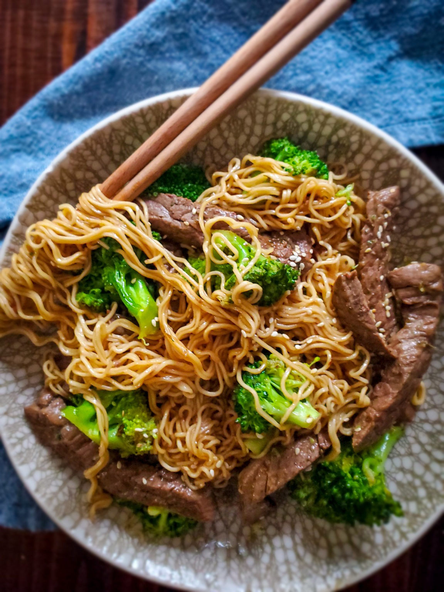

Beef and Broccoli Ramen Stir Fry

Description
This beef and broccoli ramen stir fry comes together quickly - adding the noodles with the steak prevents overcooking the noodles. Make sure you have all your ingredients prepped before you start cooking!
Ingredients
- -- 1/2 cup lower sodium beef broth
- -- 1/4 cup reduced-sodium soy sauce
- -- 2 tablespoons honey
- -- 1 tablespoon cornstarch
- -- 1 tabelspoon rice vinegar
- -- 2 teaspoons grated fresh ginger
- -- 2 cloves garlic, minced
- -- 2 teaspoons toasted sesame oil
- -- 1/4 teaspoon crushed red pepper
- -- 6 cups water
- -- 2 (3-ounce) packages instant ramen noodles (any flavor, seasoning packets discarded)
- -- 3 cups broccoli florets
- -- 1 tablespoon vegetable oil
- -- 1 pound beef sirloin steak, thinly sliced in bite-sized strips
- -- 1/4 teaspoon salt
- -- 1/4 chopped green onions
- -- 2 teaspoons sesame seeds, toasted
Steps
- 1. Gather all ingredients
- 2. Whisk together broth, soy sauce, honey, cornstarch, vinegar, ginger, garlic, sesame oil, and crushed red pepper in a small bowl for the sauce.
- 3. Bring water to a boil in a large saucepan. Break each ramen bundle in four pieces for shorter lengths. Add ramen and broccoli to boiling water, omitting seasoning packets. Cover and cook 3 minutes, stirring occasionally; drain.
- 4. In a 12-inch skillet, heat vegatable oil over medium-high heat. Season steak strips with salt. Add steak strips to hot skillet and stir-fry until browned, about 2 minutes. Remove steak from skillet.
- 5. Add sauce mixture to the skillet. Cook and stir until sauce is thickened and bubbly, about 2 minutes. Return steak and ramen mixture to skillet; toss to combine. Continue cooking and stirring until heated through, about 1 minute more.
- 6.Garnish with green onions and toasted sesame seeds.